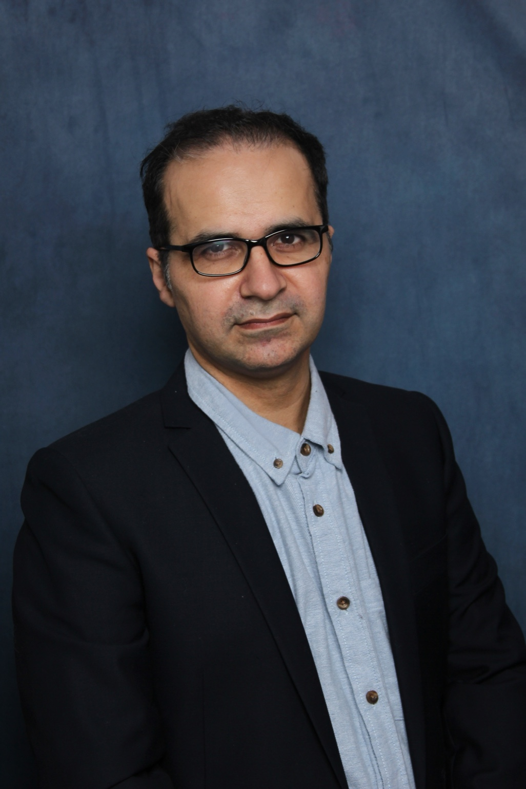

ANÄSTHESIOLOGIE · MEDIZIN · PERSPEKTIVEN
Dr. Mohsen Akhondi, MBA
Facharzt für Anästhesiologie • Fellowship für Kinderanästhesie • Intensivmedizin
Klinikum Hochrhein · Waldshut-Tiengen
E‑Mail sendenÜber mich
Ich bin Facharzt für Anästhesiologie am Klinikum Hochrhein in Waldshut-Tiengen. Mein beruflicher Weg verbindet klinische Erfahrung in Deutschland und im Iran mit einem Fellowship in Kinderanästhesie und einem MBA mit Schwerpunkt Strategie.
Lebenslauf
Ausbildung
- Humanmedizin (MD) — Mashhad University of Medical Sciences, Iran
- Facharztausbildung Anästhesiologie — Mashhad, Iran
- Fellowship Kinderanästhesie — Mashhad, Iran
- MBA (Strategy) — University of Tehran
Berufserfahrung
- Seit 07/2025 — Facharzt für Anästhesiologie, Klinikum Hochrhein, Waldshut-Tiengen
- 07/2023–06/2025 — Anästhesiologie, Sana Klinikum Hof
- 07/2021–06/2023 — Assistenzarzt für Anästhesiologie, Kreiskrankenhaus Torgau
- 04/2021–06/2021 — Assistenzarzt für Anästhesiologie, Herzzentrum Leipzig
- 09/2017–10/2019 — Kinderanästhesiologie, Universitätskliniken Akbar und Imam-Reza, Mashhad
- 11/2015–09/2017 — Chefarzt der Krankenhäuser Sajadieh und Taleghani, Torbat-e Jam, Iran
- 08/2011–09/2015 — Facharztausbildung und ärztliche Tätigkeit in der Anästhesiologie, Universitätskliniken der Mashhad University of Medical Sciences, Iran
Ausgewählte Fortbildungen
- Berliner Regionalanästhesie Intensivkurs (BRAIN)
- Strahlenschutzkurs
- Perioperative Schmerztherapie
- Intensivmedizinische Komplexbehandlung
- Sonographie & Echokardiographie in der Intensivmedizin
- Deutsche Gesellschaft für Anästhesiologie und Intensivmedizin: AFS – Anästhesie Fokussierte Sonographie: Grundlagen und Gefäßsonographie
Qualifikationen
- Approbation in Deutschland
- Anerkennung als Facharzt für Anästhesiologie in Deutschland